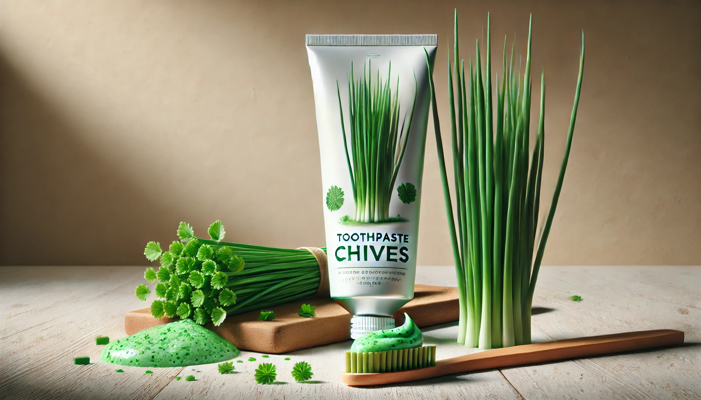

KUTHPASTE
- Baking soda
- Coconut oil
- Pappermint oil
- Daun kucai
- Daun sereh
- Garam laut kasar
- Cuci bersih kocai dan serai, lalu potong kecil-kecil.
- Blender kocai dan serai dengan sedikit air hingga halus. Saring untuk mendapatkan ekstrak cairannya.
- Dalam mangkuk kecil, campurkan ekstrak kocai-serai dengan minyak kelapa, garam laut, baking soda, dan minyak esensial
- Aduk campuran hingga membentuk pasta. cetaK menjadi bentuk yang unik yang disukai banyak orang lalu keringkan menggunakan oven dengan suhu sekitar 50 derajat celcius simpan dalam wadah
- Simpan pasta gigi alami ini dalam wadah kedap udara.
Apa itu KUTHPASTE?
KUTHPASTE (Kucai Tooth Paste) adalah pasta gigi organik yang terbuat dari tumbuhan liar Allium tuberosum atau Kucai. Berdasarkan penelitian yang telah dilaksanakan, 8% ekstrak daun kucai terbukti dapat menghambat pertumbuhan bakteri Streptococcus mutans penyebab karies gigi. Hal ini dikarenakan ekstrak daun kucai mengandung senyawa-senyawa kimia aktif seperti allicin, saponin, tannin, flavonoid, dan triterpenoid (Listiani dkk, 2005).Manfaat daun kucai
Pasta gigi berbahan daun kucai dan serai bermanfaat karena: Sifat antibakteri dan anti-inflamasi membantu mencegah plak, bau mulut, dan masalah gusi. Serai memberikan aroma segar alami dan memutihkan gigi. Bahan alami yang ramah lingkung.Unik dan sesuai tren produk alami serta mendukung petani lokal dengan memanfaatkan bahan tradisional.Bahan yang dibutuhkan untuk membuat KUTHPASTE
Cara Membuat KUTHPASTE
Keunikan dan Keungguulan KUTHPASTE
| Keunggulan | Keunikan |
|---|---|
| Membantu mencegah plak, bau mulut, dan menjaga kesehatan gusi. | Memanfaatkan kucai dan sereh yang dikenal memiliki sifat antibakteri dan antimikroba alami. |
| Memberikan kesegaran berbeda dari rasa mint. | Sereh memberikan sensasi aroma yang berbeda dari pasta gigi konvensional. |
| Aman dan Bebas bahan kimia berbahaya, cocok untuk penggunaan jangka panjang. | Menggunakan bahan lokal organik, mendukung keberlanjutan. |
| Mendukung pertanian lokal dan lebih ekologis. | Pasta gigi dengan bentuk yang sudah dikeringkan, sehingga dapat langsung dikunyah. |